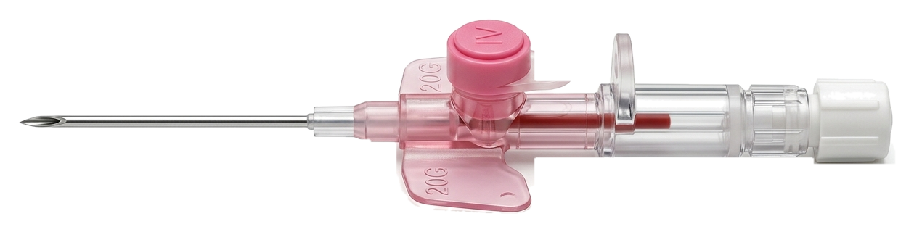

Vascular Access IV Cannula & Catheter Series
Precision peripheral intravenous catheters engineered with lubricated back-cut lancet trocars and ultra-thin wall radio-opaque catheter tubes for smooth, painless venipuncture with minimal vein trauma.
14G – 26G
Gauge Spectrum
10 – 305 mL/min
Gravity Flow Range
3-Facet Lancet
Trocar Bevel
100% Optical
Flashback Chamber

ISO 10555-5 COMPLIANT VASCULAR ACCESS
FEP / PTFE Radio-Opaque Stripe
IV Cannula Variations & ISO Flow Simulator
Choose cannula architecture and gauge standard. Observe dynamic flow rate, flashback chamber optics, and vein trauma reduction.
MOST POPULAR CLINICAL STANDARD
IV Cannula with Injection Port & Wings
Features color-coded one-way silicone port valve for intermittent extra medication delivery without interrupting continuous infusion. Flexible angled wings for stable skin fixation.
ULTRA-COMPACT STERILE INFUSION
IV Cannula Plain (Without Port / Straight)
Sleek low-profile design without injection valve, ideal for sensitive skin, continuous closed infusion lines, and minimizing patient snagging or pressure sores.
OSHA & EU DIRECTIVE COMPLIANT SAFETY
Safety IV Cannula (Auto Needle-Stick Shield)
Automated passive clip shield encapsulates the sharp needle point upon withdrawal, completely eliminating accidental needle-stick injuries and blood splatter.
SELECT ISO 10555-5 COLOR-CODED GAUGE:
14G
45 mm
16G
45 mm
18G
45 mm
20G
32 mm
22G
25 mm
24G
19 mm
26G
19 mm
20G (Pink) Clinical Use: General adult IV infusion, routine medication, non-viscous solutions.

External Diameter
1.1 mm
Catheter Length
32 mm
ISO 10555-5 STANDARD COLOR & FLOW CODING
Peripheral IV Catheter Specification Matrix
| GAUGE | COLOR CODE | OUTER DIA. | CATHETER LENGTH | GRAVITY FLOW RATE | CLINICAL INDICATION |
|---|---|---|---|---|---|
| 14G | Orange | 2.1 mm | 45 mm | 385 ml / min | Massive trauma resuscitation, rapid blood transfusions, cardiac surgery |
| 16G | Grey | 1.7 mm | 45 mm | 210 ml / min | Major surgery, high-volume fluid resuscitation, viscous infusion |
| 18G | Green | 1.3 mm | 45 mm | 105 ml / min | Blood administration, parenteral nutrition, routine operating room access |
| 20G | Pink | 1.1 mm | 32 mm | 61 ml / min | Most popular clinical standard, general adult IV therapy, antibiotic infusion |
| 22G | Blue | 0.9 mm | 25 mm | 36 ml / min | Elderly patients, oncology, pediatric routine fluid therapy, fragile veins |
| 24G | Yellow | 0.7 mm | 19 mm | 22 ml / min | Pediatrics, neonates, extremely delicate or sclerosed peripheral veins |
| 26G | Purple | 0.6 mm | 19 mm | 10 ml / min | Premature neonates, micro-vascular intensive care vascular access |